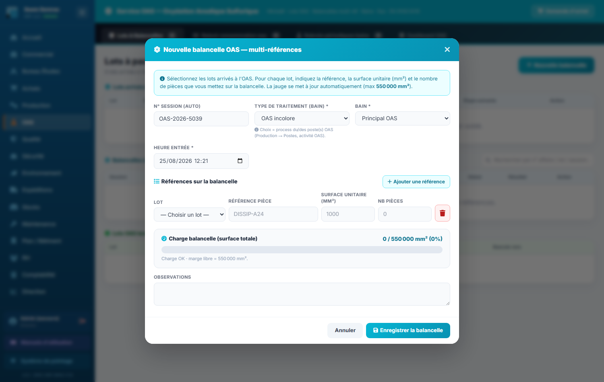
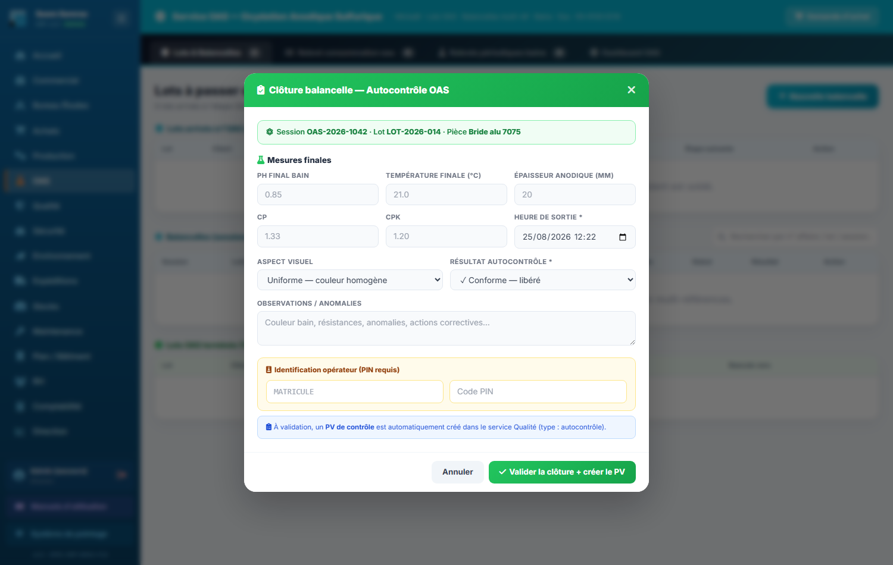
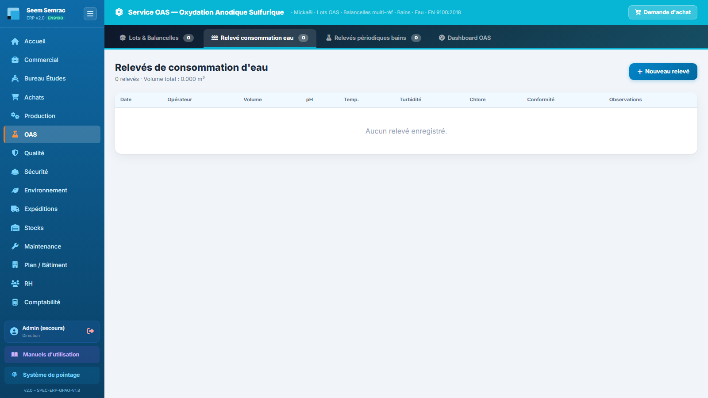
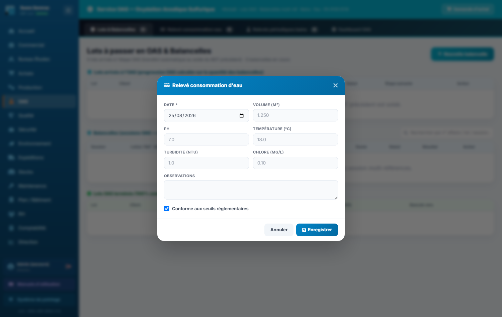
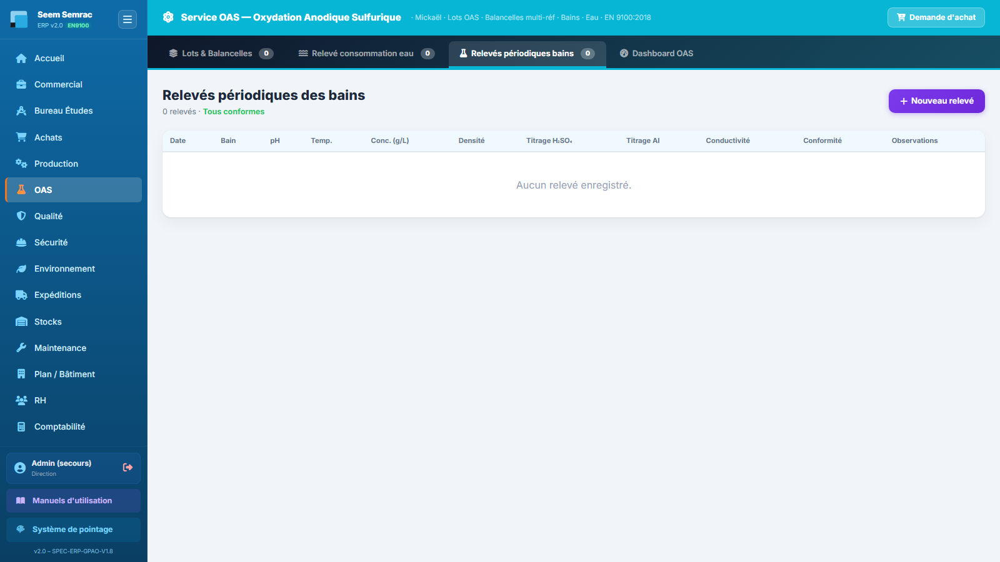
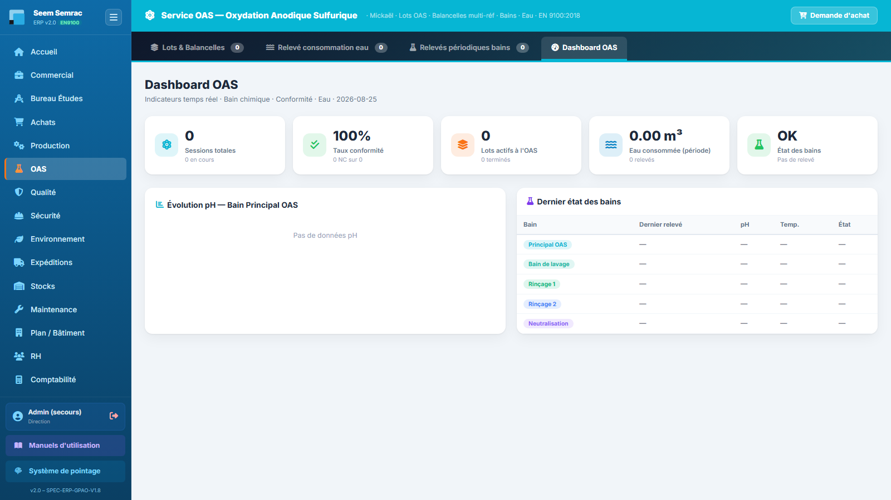

L'OAS (Oxydation Anodique Sulfurique) est le traitement de surface de l'atelier. Ce service suit les lots arrivés à l'étape OAS, les balancelles (sessions de traitement multi-références), les relevés de consommation d'eau et les relevés périodiques des bains. Vous y apprendrez à composer une balancelle, à la clore avec un autocontrôle, et à saisir les relevés réglementaires eau et bains.
👤 Pour qui : Opérateur OAS (lecture : BE, Production, Qualité, Sécurité, Stock, Maintenance)🧭 Dans l'ERP : Sidebar → OAS🗂 4 onglets
1
Lots & Balancelles
À quoi ça sert. L'OAS est une « porte de lot » : l'étape n'a pas de bon de travail propre. Dès que le bon de travail (BDT) précédant l'étape OAS est soldé en Production, le lot apparaît automatiquement dans cet onglet — vous n'avez rien à créer. Vous y composez ensuite les balancelles (une balancelle = une session de traitement pouvant mélanger plusieurs références de plusieurs lots), puis vous les clôturez avec un autocontrôle. Quand 100 % des pièces d'un lot sont traitées, le lot bascule automatiquement vers son étape suivante.
Ce que vous voyez
L'écran empile trois tableaux, avec en haut à droite le bouton « Nouvelle balancelle » :
Lots arrivés à l'OAS — colonnes : Lot · Client · Pièce · Pièces traitées (traitées / total) · Progression OAS (barre de progression en %) · Statut · Étape suivante (le BDT qui suivra) · Action. Chaque ligne porte un bouton « Balancelle » qui ouvre le formulaire avec le lot déjà présélectionné. Statuts : En OAS tant que le traitement est en cours, Terminé à 100 %.
Balancelles (sessions OAS) — colonnes : Session · Lot(s) / Réf · Qté · Charge surface (jauge en % de la limite de 550 000 mm²) · Bain · Entrée · Sortie · Durée · Statut · Résultat · Action. Statuts : En cours, Terminé, Annulé ; résultat : Conforme ou Non conforme. Une balancelle en cours porte le bouton « Clore + autocontrôle ». Un champ de recherche filtre la liste par n° d'affaire, n° de lot ou n° de session.
Lots & Balancelles — en haut les lots arrivés à l'OAS avec leur barre de progression, au milieu les balancelles avec la jauge de charge surface, en bas les lots terminés qui basculent vers l'étape suivante.
Pas à pas — créer une balancelle
Dans le tableau Lots arrivés à l'OAS, cliquez sur « Balancelle » sur la ligne du lot à traiter (le lot est présélectionné), ou cliquez sur « Nouvelle balancelle » en haut de page pour partir d'un formulaire vierge.
Le N° de session (format OAS-AAAA-NNNN) est généré automatiquement. Choisissez le type de traitement (la liste reprend les process des postes OAS déclarés dans Production → Process Ateliers) et le bain utilisé. L'heure d'entrée est préremplie à l'instant présent.
Composez le chargement : pour chaque référence, choisissez le lot (la liste affiche « n° de lot · pièce · reste N pcs »), la référence pièce et la surface unitaire se préremplissent, puis saisissez le nombre de pièces posées sur la balancelle. Cliquez sur « Ajouter une référence » pour mélanger plusieurs lots sur la même balancelle.
Surveillez la jauge de charge : elle cumule surface unitaire × quantité de toutes les lignes, sur une limite de 550 000 mm². Verte = charge OK (le message affiche la marge libre restante) ; orange à partir de 85 % = « charge proche du maximum » ; rouge au-delà de 100 % = « charge dépassée : retirez des pièces ou réduisez la quantité ».
Cliquez sur « Enregistrer la balancelle ». La session apparaît dans le tableau des balancelles avec le statut En cours, et la progression des lots concernés augmente d'autant.
Le formulaire « Nouvelle balancelle » en détail
Champ
Saisie
Obligatoire
Explication
N° Session
Automatique
—
Généré au format OAS-AAAA-NNNN, non modifiable.
Type de traitement (bain)
Liste déroulante
Oui
Reprend les noms des process des postes d'activité OAS (Production → Postes). À défaut : OAS incolore, OAS noire, Désoxydation.
Bain
Liste déroulante
Oui
Principal OAS · Bain de lavage · Rinçage 1 · Rinçage 2 · Neutralisation · Bain 2 (essais).
Heure entrée
Date + heure
Oui
Préremplie à l'instant présent ; c'est le début de la session (la durée est calculée entrée → sortie).
Références (une ligne par référence)
Lot + référence + surface unitaire (mm²) + nb pièces
Oui (au moins une ligne)
Chaque ligne doit avoir un lot, une surface > 0 et une quantité > 0. La référence et la surface se préremplissent au choix du lot ; la surface vient de la nomenclature de la pièce quand elle y est renseignée.
Observations
Texte libre
Non
Remarques sur la session (montage, particularités…).

Nouvelle balancelle — les lignes de références en haut, la jauge de charge (0 → 550 000 mm²) qui se recalcule à chaque saisie.
Pas à pas — clore une balancelle (autocontrôle)
Dans le tableau des balancelles, cliquez sur « Clore + autocontrôle » sur la ligne de la session en cours. Le bandeau de la fenêtre rappelle la session, le lot et la pièce concernés.
Saisissez les mesures finales : pH final du bain, température finale (°C), épaisseur anodique (µm), Cp et Cpk si vous les avez ; l'heure de sortie est obligatoire (préremplie à l'instant présent).
Choisissez l'aspect visuel (Uniforme — couleur homogène · Léger voile · Tache locale · Coulure · Brûlure) puis le résultat de l'autocontrôle : ✓ Conforme — libéré ou ✗ Non conforme — bloqué (NC ouverte). Notez les anomalies éventuelles dans Observations.
Identifiez-vous : saisissez votre matricule et votre code PIN (les mêmes que pour la connexion à l'ERP). Sans identification valide, la clôture est refusée.
Cliquez sur « Valider la clôture + créer le PV ». La balancelle passe à Terminé avec son résultat, et un PV de contrôle (type autocontrôle) est créé automatiquement dans le service Qualité — la notification affiche son numéro.

Clore + autocontrôle — le bandeau rappelle la session, le lot et la pièce ; en dessous les mesures finales (pH, température, épaisseur anodique, Cp/Cpk), l'heure de sortie obligatoire, l'aspect visuel, le résultat conforme / non conforme, puis le matricule et le code PIN qui signent l'autocontrôle. La validation clôt la session et crée le PV de contrôle en Qualité.
Règles & points d'attention
La limite de charge d'une balancelle est de 550 000 mm² de surface totale : l'enregistrement est refusé au-delà, quelle que soit la jauge affichée.
La progression OAS d'un lot est calculée sur les quantités posées en balancelles : elle passe à « Terminé » à 100 %, et le lot bascule alors automatiquement vers son étape suivante (colonne « Bascule vers »).
La surface unitaire proposée vient de la nomenclature de la pièce (Bureau Études). Vérifiez-la avant d'enregistrer : une surface fausse fausse la jauge de charge.
La clôture exige le matricule + PIN de l'opérateur : c'est la signature de l'autocontrôle sur le PV envoyé à la Qualité.
Attention : un résultat d'autocontrôle « Non conforme » bloque les pièces et ouvre une non-conformité côté Qualité. Ne clôturez en non conforme qu'après avoir vérifié vos mesures — la suite (dérogation, retouche, rebut) se traite dans le service Qualité.
Astuce : le bouton « Demande d'achat » en haut à droite de la bannière du service permet de demander un réapprovisionnement (chimiques, consommables…) sans quitter l'OAS : la demande est transmise directement au service Achats.
2
Relevé consommation eau
À quoi ça sert. Le traitement de surface consomme de l'eau (bains, rinçages) : cet onglet trace les relevés périodiques de consommation et de qualité de l'eau. C'est un suivi réglementaire — les relevés alimentent aussi les mesures environnementales (HSE) de l'entreprise.
Ce que vous voyez
Le sous-titre récapitule le nombre de relevés et le volume total consommé (en m³). Le tableau liste chaque relevé : Date · Opérateur · Volume · pH · Température · Turbidité · Chlore · Conformité (✓ Conforme ou ✗ NC) · Observations. Le bouton « Nouveau relevé » ouvre le formulaire de saisie.

Relevé consommation eau — l'historique des relevés avec le volume total en tête et le badge de conformité par ligne.
Pas à pas — saisir un relevé d'eau
Cliquez sur « Nouveau relevé » : la fenêtre « Relevé consommation d'eau » s'ouvre, la date du jour est préremplie.
Saisissez le volume relevé (en m³, 3 décimales possibles, ex. 1.250) puis les mesures disponibles : pH, température (°C), turbidité (NTU), chlore (mg/L). Tous ces champs sont facultatifs — ne saisissez que ce que vous avez mesuré.
Laissez la case « Conforme aux seuils réglementaires » cochée si tout est dans les seuils ; décochez-la sinon (le relevé apparaîtra ✗ NC dans la liste).
Cliquez sur « Enregistrer ». Le relevé s'ajoute à l'historique ; si des mesures environnementales sont générées, la notification l'indique (« N mesure(s) HSE créée(s) »).
Le formulaire « Relevé consommation d'eau » en détail
Champ
Saisie
Obligatoire
Explication
Date
Date
Oui
Préremplie à la date du jour.
Volume (m³)
Nombre (3 décimales)
Non
Volume d'eau consommé sur la période relevée ; s'additionne dans le volume total de l'onglet.
pH
Nombre
Non
pH de l'eau mesurée.
Température (°C)
Nombre
Non
Température de l'eau.
Turbidité (NTU)
Nombre
Non
Trouble de l'eau, en unités NTU.
Chlore (mg/L)
Nombre
Non
Teneur en chlore.
Observations
Texte libre
Non
Remarques (origine d'un écart, intervention…).
Conforme aux seuils réglementaires
Case à cocher
—
Cochée par défaut ; décochez si une mesure sort des seuils.

Relevé d'eau — la date est préremplie ; seuls les champs mesurés doivent être renseignés.
Règles & points d'attention
La colonne Opérateur affiche l'auteur du relevé quand il est connu ; les champs non mesurés restent affichés « — » dans la liste.
Le volume total affiché en tête d'onglet est la somme de tous les relevés listés : il alimente aussi la tuile « Eau consommée » du Dashboard OAS.
Bon à savoir : les relevés d'eau peuvent générer automatiquement des mesures HSE exploitées par les services Sécurité et Environnement — d'où l'importance de saisir des valeurs exactes et datées.
3
Relevés périodiques bains
À quoi ça sert. La qualité du traitement OAS dépend directement de la chimie des bains. Cet onglet trace les contrôles périodiques des cinq bains de la ligne (Principal OAS, Bain de lavage, Rinçage 1, Rinçage 2, Neutralisation) : pH, température, concentration, titrages… C'est le point de vigilance n° 1 du service : un bain déclaré non conforme ouvre automatiquement une non-conformité dans le service Qualité.
Ce que vous voyez
Le sous-titre affiche le nombre de relevés et l'état global : Tous conformes en vert, ou le nombre de relevés hors seuil en rouge. Le tableau (avec défilement horizontal) liste chaque relevé : Date · Bain (badge coloré par bain) · pH · Température · Concentration (g/L) · Densité · Titrage H₂SO₄ · Titrage Al · Conductivité · Conformité · Observations. Le bouton « Nouveau relevé » ouvre le formulaire.

Relevés périodiques bains — un badge de couleur par bain, les mesures chimiques colonne par colonne et le badge de conformité en bout de ligne.
Pas à pas — saisir un relevé de bain
Cliquez sur « Nouveau relevé » : la fenêtre « Relevé périodique bain » s'ouvre, la date du jour est préremplie.
Choisissez le bain contrôlé (Principal OAS, Bain de lavage, Rinçage 1, Rinçage 2 ou Neutralisation).
Saisissez les mesures réalisées : pH, température (°C), concentration (g/L), densité, titrage H₂SO₄ (g/L), titrage Al (g/L), conductivité (mS/cm). Tous ces champs sont facultatifs — renseignez ce que votre contrôle a couvert.
Statuez sur la conformité : laissez la case « Conforme » cochée si le bain est dans les tolérances ; décochez-la si une mesure sort des seuils, et expliquez l'écart dans Observations.
Cliquez sur « Enregistrer ». Si le bain est conforme, le relevé s'ajoute simplement à l'historique. S'il est non conforme, une notification orange vous prévient : « Bain … non conforme : NC ouverte côté Qualité » — la non-conformité est créée automatiquement et sera traitée par le service Qualité.
Le formulaire « Relevé périodique bain » en détail
Champ
Saisie
Obligatoire
Explication
Date
Date
Oui
Préremplie à la date du jour.
Bain
Liste déroulante
Oui
Principal OAS · Bain de lavage · Rinçage 1 · Rinçage 2 · Neutralisation.
pH
Nombre
Non
Pour le bain principal, la tolérance de référence est pH 0.7 – 1.1 (visible sur le Dashboard OAS).
Température (°C)
Nombre
Non
Température du bain.
Concentration (g/L)
Nombre
Non
Concentration du bain (référence bain principal : 180 g/L de H₂SO₄).
Densité
Nombre (3 décimales)
Non
Densité mesurée du bain.
Titrage H₂SO₄ (g/L)
Nombre
Non
Résultat du titrage acide.
Titrage Al (g/L)
Nombre
Non
Teneur en aluminium dissous.
Conductivité (mS/cm)
Nombre
Non
Conductivité du bain.
Conforme
Case à cocher
—
Cochée par défaut. Décochée = NC créée automatiquement en Qualité.
Relevé de bain — les mesures chimiques et la case « Conforme » : c'est elle qui déclenche (ou non) la NC automatique.
Règles & points d'attention
Un relevé par bain et par échéance : c'est le dernier relevé de chaque bain qui fait l'état de référence affiché sur le Dashboard OAS.
La conformité est déclarée par l'opérateur (case à cocher) : comparez vos mesures aux tolérances de la gamme avant de statuer.
Attention : décocher « Conforme » ouvre immédiatement et automatiquement une non-conformité dans le service Qualité. C'est le comportement voulu (traçabilité EN 9100) — ne « corrigez » jamais un relevé en le déclarant conforme à tort pour éviter la NC.
Astuce : consultez l'évolution du pH du bain principal sur le Dashboard OAS avant de lancer une session : une dérive lente se voit mieux sur la courbe des derniers relevés que sur une mesure isolée.
4
Dashboard OAS
À quoi ça sert. Vue d'ensemble en temps réel de l'activité du traitement de surface : sessions, conformité, lots en cours, consommation d'eau et état des bains. C'est l'écran à consulter en début de poste pour savoir où en est la ligne avant de charger une balancelle.
Ce que vous voyez
Cinq tuiles d'indicateurs en haut de page :
Sessions totales — nombre de balancelles enregistrées, avec le nombre en cours.
Taux conformité — pourcentage de sessions terminées conformes (le sous-texte détaille « X NC sur Y » sessions terminées).
Lots actifs à l'OAS — lots en cours de traitement, avec le nombre de lots terminés.
Eau consommée (période) — volume total en m³ et nombre de relevés.
État des bains — « OK » en vert si tous les relevés sont conformes, sinon le nombre de relevés NC en rouge ; le sous-texte rappelle le dernier pH du bain principal.
En dessous, deux blocs côte à côte : le graphique « Évolution pH — Bain Principal OAS » (les 5 derniers relevés en barres, vertes dans la tolérance pH 0.7 – 1.1, rouges en dehors — référence H₂SO₄ 180 g/L) et le tableau « Dernier état des bains » (Bain · Dernier relevé · pH · Température · État) qui récapitule le dernier relevé de chacun des cinq bains.

Dashboard OAS — les 5 tuiles d'indicateurs, l'évolution du pH du bain principal et le dernier état de chaque bain.
Pas à pas — le réflexe de début de poste
Ouvrez le Dashboard OAS et vérifiez la tuile État des bains : si elle affiche des NC, traitez d'abord la chimie (voir onglet Relevés périodiques bains) avant de charger des pièces.
Contrôlez la courbe de pH du bain principal : une barre rouge ou une dérive vers les bornes 0.7 / 1.1 appelle un nouveau relevé, voire un ajustement du bain.
Regardez Lots actifs à l'OAS puis passez à l'onglet Lots & Balancelles pour composer vos balancelles de la journée.
Règles & points d'attention
Tous les indicateurs sont calculés en direct à partir des trois onglets précédents : un relevé ou une clôture saisis apparaissent immédiatement ici.
Le taux de conformité ne compte que les sessions terminées : les balancelles en cours n'y entrent pas encore.
Bon à savoir : un tableau de bord OAS plus complet (avec filtres et export) existe aussi dans le service Tableaux de bord → Dashboard OAS, accessible aux autres services en lecture.